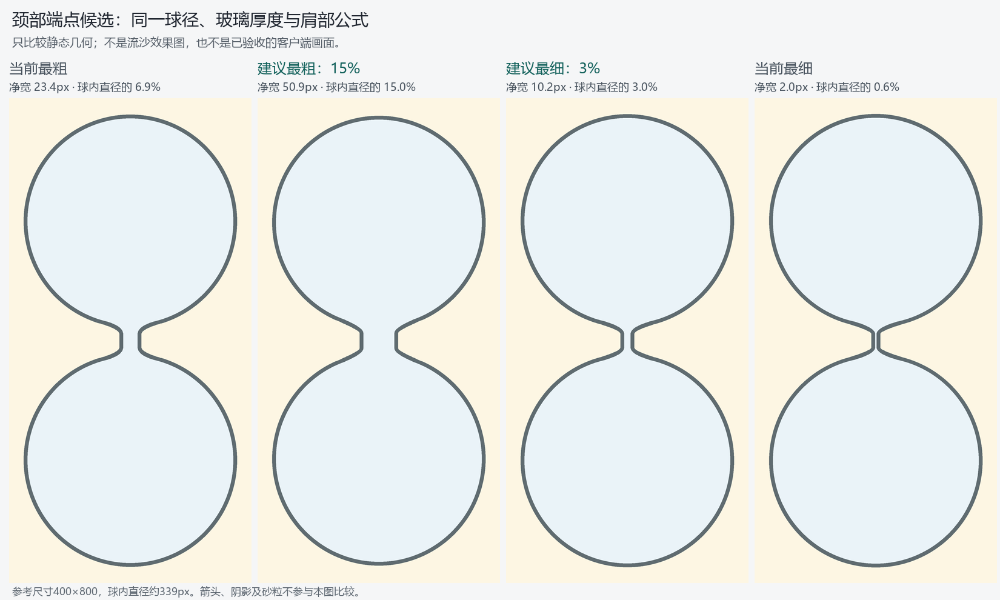

颈部粗细：先定端点，再定周期函数
2026-10-23。用户已确认1秒和5秒同宽可接受，并要求将最粗候选增至15%。以下为静态几何及函数候选，未修改应用参数，未完成动态验收。
建议端点
以球内直径D为基准，控制最窄直颈段的内部净宽d：最粗d=0.15D，最细d=0.03D。这是供确认的视觉端点，不是物理定律。先确定通道，再向外加原有玻璃厚度；不能先限制外宽再扣壁厚，导致长周期只剩一条细缝。
| 400×800参考 | 球内直径 | 颈内净宽 | 外颈全宽 |
|---|---|---|---|
| 当前最粗 | 约339px | 约23.4px（6.9%） | 36px |
| 建议最粗 | 约339px | 约50.9px（15%） | 约63.5px |
| 建议最细 | 约339px | 约10.2px（3%） | 约22.8px |
| 当前最细 | 约339px | 2px（约0.6%） | 14px |

最粗15%能让短周期颈部明显宽于现状，同时仍保留上下球之间的收束。最细3%保留明显的细颈，但摆脱当前约2px的狭缝。两端是否最终采用，以这张轮廓对照及之后的实际小样为准，不能只凭数值合格。
粗细逻辑
- 先计算当前布局下的实际球内直径D；高度受限的横屏/平板也使用这个D，不按窗口宽度直接推颈宽。
- 1～5秒共用最粗档；单局开始后颈宽固定，不随剩余秒数缩放。
- 沿用当前10小时作为最细档到达时长；超过后保持最细，避免无限变窄。这一时间锚点可在端点确定后单独校准。
- 中间采用连续、单调、受端点约束的候选幂曲线：
u = clamp(log(T/5) / log(36000/5), 0, 1)，d/D = 0.15 × (0.03/0.15)^u。等价于在区间内取d/D = 0.15 × (T/5)^(-0.18121)。两端由夹紧保证精确落在15%和3%。 - 外半宽为
d/2 + 玻璃厚度，再按现有连续肩部几何连接球体。几何计算保留浮点，不先把半宽取整导致额外台阶。
这条曲线在对数时间轴上按相同比例收窄：总时长每延长10倍，中间区间的净宽约乘0.659。它是视觉映射候选，不宣称砂流必须遵守该物理关系。当前函数的主要缺口是外宽/净宽口径及端点，不能仅换曲线就宣布解决。
中间档位也会改变：此候选使50秒净宽从原约17.37px变为33.54px，增加约93%，且超过原版最粗档23.37px。不能描述成只改极端档。端点确认后，应把50秒作为中间锚点单独审阅，再校准曲线；这张数值表不是已冻结的档位表。
| 总时长 | 候选颈内净宽/球径 | 400×800参考净宽 |
|---|---|---|
| 1秒、5秒 | 15% | 约51px |
| 50秒 | 约9.9% | 约34px |
| 5分钟 | 约7.1% | 约24px |
| 30分钟 | 约5.2% | 约18px |
| 1小时 | 约4.6% | 约15px |
| 10小时及以上 | 3% | 约10px |
本项的验收边界
- 端点等值、区间连续单调、上下界有效，1秒与5秒一致；不能出现负净宽或被壁厚吞掉的内腔。
- 新函数显式输入设定时长T、本次目标布局球内径D及本次壁厚。当前构建顺序在更新球径前读取neck_w，接入时不能直接在旧属性位置使用缓存_R_inner，否则初次创建和缩放会取错尺寸。
- 粗细端点、旧neck_w接口及飞溅口径归一化辅助值必须统一单位。唯一控制量为净宽d，所有需要外半宽的旧接口一致转换为d/2＋壁厚；不得重复扣壁厚，也不得拿旧外半宽端点去归一化新净宽。
- 同一球径下比例一致；同时检查颈长、肩部圆顺、两侧玻璃和窄屏可读性。静态比例通过不能代替动态流沙验收。
- 颈内砂与出口沙柱匹配，不能只加宽玻璃而内砂仍细，也不能继续在出口叠加粒子半径造成突增。
- 颈宽还会影响颈部存沙、自由沙柱、飞溅范围和末段净空，因此实施后须连带检查；不能把轮廓图当作这些方面已经正确。
- 本次只建立粗细规则，容量100%/90%、速度、密度和飞溅表现不由这组端点自动决定。